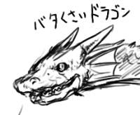

A.D.S.R.M! (1999/10/25)
そんなわけでPOLYSICSの新譜ですよ！ミラーシェードでピコピコのぎゅんぎゅんの胸にでっかく"P"であり，1st Pに比べて作りが丁寧な感じで大好感なので，というかむしろニューウェーブ万歳！ヒカシューのパイクもカバーであり，アレンジが秀逸．みんなも聞こう！
定時後の夕休み，休憩所でひと休みしてたら同期が生協売店からコンビニ弁当を抱えて登場．
「この時間は半額だよ」
と見せられたのは，ミニオムライスとミニスパゲッティナポリタンのミニセット140円(定価280円)也．所謂残業食というやつですね．
「へぇ．それケチャップ定食？」
嫌な顔をされた．
今週のどれみを見て泣いた．大人が子供に向けて作ったアニメの正しい姿で，昔のアニメにありがちなストレス大発生な人間関係とかに陥らず，かつ，楽しく描写しきる労力に乾杯！どれみどれみ！はづきはづき！あいこあいこ！おんぷおんぷ！
すばらしいなぁ！
ニシーに教えたのはボクですしね！(絵柄が大友克洋に似ていることを指摘され，いえ，ボクはむしろメビウスの方で，と返す感覚で)
隣の部屋の奴が新しいCDを買ったらしくて毎日毎日聞いている．ハウスでダンスな感じらしく，４つ打ちのバスドラムだけがドンドンと響いてくる．ドンドン，ドンドンとやられてなんだか攻め立てられている気分になってきた．
EP7 (1999/10/20)
ワンピース録画大成功！(挨拶)
なんだかクリリンが主人公のドラゴンボールみたいだった(声優が)．
ニシーみたいに録画失敗して泣かずにすんだ．
各地で話題の『地球防衛企業ダイ・ガード』を見た．
ロボというロボは煽って煽って手前にビルを配置！という感じで巨大物的に大OKであり，室井管理官が眉に皺をよせながらあんたは上にいろ！で友情でヘテロダインのデザイン的にエヴァ以降であり，ロケットパンチとか斬新でよかったけど，あんまり予算予算言うのもどうかと思ったが，役員会議卓が円形なのはやりすぎかと思った．
そして菅野よう子編曲であるところのED曲が寒くなって来たこの季節的になんだかせつなさ炸裂！であり，EDバックを流れる街の風景になんだか涙が出た(特に井の頭公園)．若すぎると思った(自分が)．
それから掛け算くさいキャラ配置が嫌だなと思った．こうしないと売れないのだなと思った．
各地で話題の『無限のリヴァイアス』を見た．
あか抜けないキャラクタデザインなれど宇宙ブギーポップ(命名：ヒライワ)の独白シーンがエヴァ以降であり，ハードSFっぽい展開とか期待しつつ，全部が衛星軌道上で展開すると軌道エレベータ的にぐっとくるのだが，まだ全然先が見えない感じだけど，やっぱりメカの起動シーンにはぐっとくる感じで，キャラクタ少年少女が割とうざい感じで困った感じもしつつ，SFは中年でやれと思った．
そしてBGMが割とダブやヒップでポップなアイツっぽくて使い所が難しいとか思いつつも，まぁそれなりに時代的によいのではないかと思った．
それから掛け算くさいキャラ配置が嫌だなと思った．こうしないと売れないのだと思った．
先週末にアキバに行きたくなったので暇そうにしているはずのニシーに電話したら，おくのっちとなぎーると一緒にアキバに行くというのでナイスシンクロ！ってことで合流決定．あやまりながら合流して頭をペコペコ下げた．
iBookはやっぱりデカかったが，思ったより上品な感じで好印象を持ったが，AirPortカードが出るまでは無価値なので保留．というか欲しくても買えないdeath死ね！おくのっちが(今さら)G3 upgrade cardを買った．950%も速くなるらしいので，溜めて溜めてゴー！なのも感動がでかくてよいものですね．ニシーはメッセサンオーで汚臭いビデオを探していたが見つからなくて，結局『ソルディバイド』サターン版を2k円で購入したのを見て，うらやましくなったのでボクも買っておいた．
さっさと案内してくれるなぎーるはさすがだと思った．
アキバから移動して，ミスタードーナッツに入ってみんなでスクラッチ！スクラッチ！ブルーベリーのトランスルーセントなグラタン皿が欲しいのでみんなに頭をペコペコ下げて点数を集めたが5点だった(伏線)．おくのっちとゲームブックをアツく語ってみんなにひかれたりした．14へ行け！でピップのエクスカリバーで夢時間だろ！ファイティングファンタジーだろ！さいとうたかをの『サバイバル』もゲームブック化されたんだぜ！双方向性ゲームブックは割と日本文化で鈴木直人とかでメスロン！でありウォーロックとタクティクスは硬派だったのにPRGマガジンとかナニで，ホビージャパンと角川が悪いんだろ！なぁ！
帰ってから『ソルディバイド』をプレイするとワイバーンとかのデザインが古きよき洋物ファンタジーでぐっときつつ，ああ，あのミスタードーナッツでみんなに嫌われながら語り合ったゲームブックの話題は伏線だったのだなと合点がいった(伏線続く)．
アキバに行き癖がついたので翌日も行った．ミスタードーナッツで昼食をとったんだけど，景品引き換えが今日までにもかかわらず，やっぱり点数が足りなくて，悔しくなったので，ミスタードーナッツに行きまくって点数があまってあまって仕方がなくて，あまつさえ貰って来たカップについてママンに怒られているヒライワに電話して，怒られないようにオレがグラタン皿をもらってやろうと電話した(伏線回収)．ヒライワはなんだかIRC(要はチャット)をしていたらしく，電話の向こうで何かが交わされる気配がした(つづく？)．
青空を仰ぎ見る感覚って，なんだかちょっとせつないよな＞ヒライワ